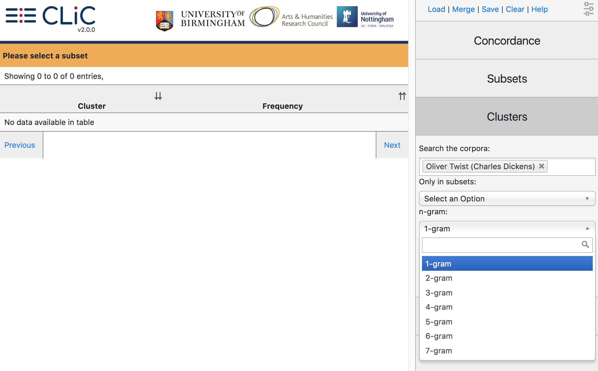

Clusters¶
The output of the cluster tool generates frequency lists of single words and ‘clusters’ (repeated sequences of words). Clusters are also called ‘n-grams’, where ‘n’ stands for the length of the phrase. If we choose a ‘1-gram’ (single word), we retrieve a simple word list. (In Oliver Twist, for example, the top 10 words retrieved from this tool are the, and, to, of, a, he, in, his, that – all function words, as we would generally expect.) From version 2.0 onwards, CLiC supports clusters of length 1 (single words) up to 7 (i am very much obliged to you), as illustrated in Fig. 41.

Fig. 41 Cluster options¶
As in the other tabs, you can restrict the search to a particular subset (‘Only in subsets: Select an Option’) so that, for example, you can create frequency lists for clusters in quotes (or any of the other subsets). You can save the resulting list as a CSV file (for example for use in a spreadsheet viewer) by clicking the ‘Save’ button at the top. Note that the CLiC ‘Cluster’ tab will display words and clusters with a minimum frequency of 5.